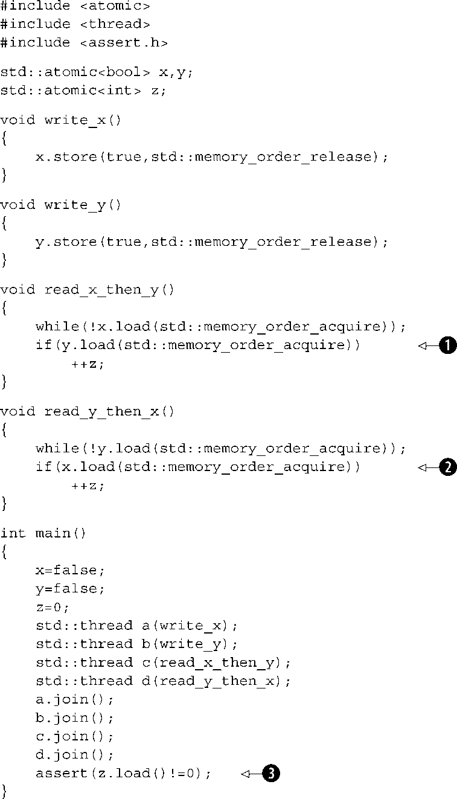

第5章 C++内存模型和原子类型上操作
本章主要内容
- C++11内存模型的详情
- 由C++标准库提供的原子类型
- 这些类型上可用的操作
- 如何使用那些操作提供线程间的同步
C++11标准中最重要的特性之一，是大多数程序员甚至都不会关注的东西。它并不是新的语法特性，也不是新的类库功能，而是新的多线程感知内存模型。若是没有内存模型来严格定义基本构造模块如何工作，我所介绍的功能就不能可靠地工作。当然，大多数程序员没有注意到它是有原因的。如果使用互斥元来保护数据，以及条件变量或者future作为事件信号，它们为何 工作的细节就不重要了。仅当你开始尝试“接近机器”时，内存模型的精确细节才重要。
无论其他语言如何，C++是一门系统编程语言。标准委员会的目标之一，是不再需要一个比C++更低级的语言。应该在C++里为程序员提供足够的灵活性，在做任何他们需要的事情时不会被语言挡在路中间，并且在提出需求时允许他们“接近机器”。原子类型和操作正是要允许这一点，提供了可通常减至一或两个CPU指令的低阶同步操作的功能。
在本章中，我将从阐述内存模型的基础开始，接着转到原子类型和操作，并最终介绍可用于原子类型上操作的多种同步类型。这是相当复杂的，除非你打算使用原子操作编写代码以实现同步（比如第7章中的无锁数据结构），否则无需知道这些细节。
让我们放轻松，来看看内存模型的基础。
5.1 内存模型基础
内存模型包括两个方面：基本结构 方面，这与事物是如何放置在内存中的有关；然后是并发 方面。结构方面对于并发是很重要的，尤其从低级原子操作中来看，因此我将从这里开始。在C++中，一切都是关于对象和内存位置。
5.1.1 对象和内存位置
C++程序中的所有数据均是由对象（object）
组成的。这并不是说你可以创建一个派生自int
的新类，或是基本类型具有成员函数，或者当人们谈及如Smalltalk或Ruby这样的语言，说“一切都是对象”时暗指的任何其他结果。这只是一句关于C++中数据的构造块的一种陈述。C++标准定义对象为“存储区域”，尽管它会为这些对象分配属性，如它们的类型和生存期。
其中一些对象是简单基本类型的值，如int
或float
，而另一些则是用户定义类的实例。有些对象（例如数组、派生类的实例和具有非静态数据成员类的实例）具有子对象，但其他的则没有。
无论什么类型，对象均被存储于一个或多个内存位置
中。每个这样的内存位置要么是一个标量类型的对象（或子对象），比如unsigned short
或my_class*
，要么是相邻位域的序列。如果使用位域，有非常重要的一点必须注意：虽然相邻的位域是不同的对象，但它们仍然算作相同的内存位置。图5.1表示了一个struct
如何划分为对象和内存位置。
首先，整个struct
是一个对象，它由几个子对象组成，各子对象对应每个数据成员。位域bf1
和bf2
共享一个内存位置，而std::string
对象在内部由几个内存位置组成，但是其余的每个成员都有自己的内存位置。注意零长度的位域bf3
是如何将bf4
分割进它自己的内存位置的。
可以从中汲取四个要点。
- 每个变量都是一个对象，包括其他对象的成员。
- 每个对象占据至少一个 内存位置。
-
如
int或char这样的基本类型的变量恰好一个 内存位置，不论其大小，即便它们相邻或是数组的一部分。 - 相邻的位域是相同内存位置的一部分。
我可以肯定你在怀疑这与并发有什么关系，那么让我们来看一看。
图5.1 将struct
划分为对象和内存位置
5.1.2 对象、内存位置以及并发
好了，这里是对于C++中多线程应用程序至关重要的部分，所有东西都取决于这些内存位置。如果两个线程访问不同的 内存位置，是没有问题的，一切工作正常。另一方面，如果两个线程访问相同的 内存位置，那么你就得小心了。如果线程都没有在更新该内存位置，没问题，只读数据不需要进行保护或同步。如果任意一个线程正修改数据，就会有竞争条件的可能，如第3章所述。
为了避免竞争条件，在这两个线程的访问中间，就必须有一个强制的顺序。确保有一个确定顺序的方法之一，是使用如第3章中所述的互斥元。如果同一个互斥元在两个访问之前被锁定，则每次只有一个线程可以访问该内存位置，即有一个必然发生在另一个之前。另一种方法是在相同的或是其他的内存位置使用原子（atomic） 操作的同步特性（参见5.2节对原子操作的定义），在两个线程的访问之间强加一个顺序。用原子操作来强制顺序描述于5.3节。如果多于两个线程访问同一个内存位置，则每一对访问都必须具有明确的顺序。
如果来自独立线程的两个对同一内存位置的访问没有强制顺序，其中一个或两个访问不是原子的，且一个或两个是写操作，那么这就是数据竞争并导致未定义行为。
这个陈述是至关重要的：未定义行为是C++最令人不爽的状况之一。根据语言标准，一旦应用程序包含未定义行为，那么一切都很难说，整个应用程序的行为都是未定义的，它能干出任何事情来。我所知道的一个情况是，某个未定义行为的实例导致某人的监视器着火了。虽然这不大可能发生在你身上，但数据竞争绝对是一个严重的错误，且应该不惜一切代价来避免。
在该陈述中，还有另外一个很重要的点：可以通过使用原子操作来访问具有竞争的内存位置，来避免不确定行为。这并不阻止竞争本身——原子操作所接触的内存位置首先仍是未指定的——但是却能够将程序带回确定行为的领域。
在学习原子操作前，还有一个对了解对象与内存位置很重要的概念：修改顺序。
5.1.3 修改顺序
C++程序中每个对象，都具有一个确定的修改顺序（modificationorder） ，它是由来自程序中的所有线程的对该对象的所有写入组成的，由对象的初始化开始。在多数情况下，该顺序在每次运行之间都有所不同，但是在任意给定的程序执行里，系统中的所有线程必须一致同意此顺序。如果问题中的对象不是如5.2节所述的原子类型之一，你就得负责确认有足够的同步，来确保线程一致同意每个变量的修改顺序。如果不同的线程看到的是一个变量的不同的顺序值，就会有数据竞争和未定义行为（参见5.1.2节）。如果使用原子操作，编译器将负责确保必要的同步已就位。
这一要求意味着某些投机性的执行是禁止的，因为一旦线程已在修改顺序中看到了某个特定项，则后续读取操作必须返回更晚的值，同时来自该线程对此对象后续的写入操作在修改顺序中也必须发生得更晚。同样，在同一线程中，在对象的写操作之后的读取，就必须返回要么写入的值，要么在该对象的修改顺序中更晚发生的另一个值。尽管所有的线程都必须一致同意程序中每一个独立对象的修改顺序，但却不必一致同意不同对象上操作的相对顺序。参见5.3.3节更多地了解线程间的操作顺序。
那么，是什么构成了原子操作，它又是如何用来强制顺序的？
5.2 C++中的原子操作及类型
原子操作（atomicoperation） 是一个不可分割的操作。从系统中的任何一个线程中，你都无法观察到一个完成到一半的这种操作，它要么做完了，要么就没做完。如果读取对象值的载入操作是原子的（atomic） ，并且所有对该对象的修改也都是原子的 ，那么这个载入操作所获取到的要么是对象的初始值，要么是被某个修改者存储后的值。
其对立面，是一个非原子操作可能被另一个线程视为半完成的。如果这是一次存储操作，那么被另一个线程观察到的值可能既不是储存前的值也不是已存储的值，而是其他的东西。如果执行非原子的载入操作，那么它可能获取对象的一部分，由另一个线程修改了值，然后再获取其余的对象，这样获取到的既不是第一个值也不是第二个值，而是两者的某种组合。这就是一个简单的有问题的竞争条件，正如第3章所述的那样，但是在这个级别，它可能构成一个数据竞争 （参见5.1节）并因而导致未定义行为。
在C++中，大多数情况下需要通过原子类型来得到原子操作，让我们来看一看。
5.2.1 标准原子类型
标准原子类型
可以在<atomic>
头文件中找到。在这种类型上的所有操作都是原子的，在语言定义的意义上说，只有在这些类型上的操作是原子的，虽然你可以利用互斥元使得其他操作看起来像
原子的。事实上，标准原子类型本身就可以进行这样的模拟，它们（几乎）都具有一个is_lock_free()
成员函数，让用户决定在给定类型上的操作是否直接用原子指令完成（x.is_lock_free()
返回true
），或者通过使用编译器和类库内部的锁来完成（x.is_lock_free()
返回false
）。
唯一不提供is_lock_free()
成员函数的类型是std::atomic_flag
。该类型是一个非常简单的布尔标识，并且在这个类型上的操作要求
是无锁的。一旦你有了一个简单的无锁布尔标志，就可以用它来实现一个简单的锁，从而以此为基础实现所有其他的原子类型。当我说非常简单
时，指的是：类型为std::atomic_flag
的对象被初始化为清除，接下来，它们可以被查询和设置（通过test_and_set()
成员函数）或者清除（通过clear()
成员函数）。就是这样：没有赋值，没有拷贝构造函数，没有测试和清除，也没有任何其他的操作。
其余的原子类型全都是通过std::atomic<>
类模板的特化来访问的，并且有一点更加的全功能，但可能不是无锁的（如前所述）。在大多数流行的平台上，我们认为内置类型的原子变种（例如std::atomic<int>
和std::atomic<void*>
）确实是无锁的，但却并非是要求的。你马上会看到，每个特化的接口反映了类型的属性。例如，像&=
这样的位操作没有为普通指针作定义，因此它们也没有为原子指针作定义。
除了可以直接使用std::atomic<>
，你还可以使用表5.1所示的一组名称，来提及已经提供实现的原子类型。鉴于原子类型如何被添加到C++标准的历史，这些替代类型名称可能指的是相应的std::atomic<>
特化，也可能是该特化的基类。在同一个程序中混用这些替代名称和std::atomic<>
特化的直接命名，可能会因此导致不可移植的代码。
表5.1 标准原子类型的替代名称和它们所对应的std::atomic<>特化
|
原子类型 |
对应的特化 |
|---|---|
|
atomic_bool |
std::atomic<bool> |
|
atomic_char |
std::atomic<char> |
|
atomic_schar |
std::atomic<signed char> |
|
atomic_uchar |
std::atomic<unsigned char> |
|
atomic_int |
std::atomic<int> |
|
atomic_uint |
std::atomic<unsigned> |
|
atomic_short |
std::atomic<short> |
|
atomic_ushort |
std::atomic<unsigned short> |
|
atomic_long |
std::atomic<long> |
|
atomic_ulong |
std::atomic<unsigned long> |
|
atomic_llong |
std::atomic<long long> |
|
atomic_ullong |
std::atomic<unsigned long long> |
|
atomic_char16_t |
std::atomic<char16_t> |
|
atomic_char32_t |
std::atomic<char32_t> |
|
atomic_wchar_t |
std::atomic<wchar_t> |
同基本原子类型一样，C++标准库也为原子类型提供了一组typedef
，对应于各种像std::size_t
这样的非原子的标准库typedef
，如表5.2所示。
表5.2 标准库原子类型定义以及其对应的内置类型定义
|
原子typedef |
对应的标准库typedef |
|---|---|
|
atomic_int_least8_t |
int_least8_t |
好多的类型啊！有一个很简单的模式，对于标准的typedef T
，其对应的原子类型与之同名并带有atomic
_前缀：atomic_T
。这同样适用于内置类型，区别是signed
缩写为s
，unsigned
缩写为u
，long long
缩写为llong
。一般来说，无论你要使用的是什么T
，都只是简单地说std::atomic<T>
，而不是使用替代名称。
传统意义上，标准原子类型是不可复制且不可赋值的，因为它们没有拷贝构造函数和拷贝赋值运算符。但是，它们确实
支持从相应的内置类型的赋值进行隐式转换并赋值，与直接load()
和store()
成员函数、exchange()
、compare_exchange_weak()
以及compare_exchange_strong()
一样。它们在适当的地方还支持复合赋值运算符：+=、−=、*=、|=等，同时整型和针对指针的std::atomic<>
特化还支持++
和--
。这些运算符也拥有相应命名的具有相同功能的成员函数：fetch_add()
、fetch_or()
等。赋值运算和成员函数的返回值既可以是存储的值（在赋值运算符的情况下）或运算之前的值（在命名函数的情况下）。这避免了可能出现的问题，这些问题源于这种赋值运算符通常会返回一个将要赋值的对象的引用。为了从这种引用中获取存储的值，代码就得执行独立的读操作，这就允许另一个线程在赋值运算和读操作之间修改其值，并为竞争条件敞开大门。
然而，std::atomic<>
类模板并不仅仅是一组特化。它具有一个主模板，可以用于创建一个用户定义类型的原子变种。由于它是一个泛型类模板，操作只限为load()
、store()
（和与用户定义类型间的相互赋值）、exchange()
、compare_exchange_weak()
和compare_exchange_strong()
。
在原子类型上的每一个操作均具有一个可选的内存顺序参数，它可以用来指定所需的内存顺序语义。内存顺序选项的确切语义参见5.3节。就目前而言，了解运算分为三种类型就足够了。
-
存储（store）
操作，可以包括
memory_order_relaxed、memory_order_release或memory_order_seq_cst顺序 -
载入（load）
操作，可以包括
memory_order_relaxed、memory_order_consume、memory_order_acquire或memory_order_seq_cst顺序 -
读-修改-写（read-modify-write）
操作，可以包括
memory_order_relaxed、memory_order_consume、memory_order_acquire、memory_order_release、memory_order_acq_rel或memory_order_seq_cst顺序
所有操作的默认顺序为memory_order_seq_cst
。
现在让我们来看看能够在标准原子类型上进行的实际操作，从std::atomic_flag
开始。
5.2.2 std::atomic_flag上的操作
std::atomic_flag
是最简单的标准原子类型，它代表一个布尔标志。这一类型的对象可以是两种状态之一：设置或清除。这是故意为之的基础，仅仅是为了用作构造块。基于此，除非在极特殊情况下，否则我都不希望看到使用它。即便如此，它将作为讨论其他原子类型的起点，因为它展示了一些应用于原子类型的通用策略。
类型为std::atomic_flag
的对象必须
用ATOMIC_FLAG_INIT
初始化。这会将该标志初始化为清除
状态。在这里没有其他的选择，此标志总是以清除开始。
这适用于所有对象被声明的地方，且无论其具有什么作用域。这是唯一需要针对初始化进行特殊处理的原子类型，但同时也是唯一保证无锁的类型。如果std::atomic_flag
对象具有状态存储持续时间，那么就保证了静态初始化，这意味着不存在初始化顺序问题，它总是在该标识上的首次操作时进行初始化。
一旦标识对象初始化完成，你只能对它做三件事：销毁、清除或设置并查询其先前的值。这些分别对应于析构函数、clear()
成员函数以及test_and_set()
成员函数。clear()
和test_and_set()
成员函数都可以指定一个内存顺序。clear()
是一个存储
操作，因此不能有memory_order_acquire
或memory_order_acq_rel
语义，但是test_and_set()
是一个读-修改-写操作，并因此能够适用任意的内存顺序标签。至于每个原子操作，其默认值都是memory_order_seq_cst
。例如，

此处，对clear()
的调用❶明确要求使用释放语义清除该标志，而对test_and_set()
的调用❷使用默认内存顺序来设置标志和获取旧的值。
你不能从一个std::atomic_flag
对象拷贝构造另一个对象，也不能将一个std::atomic_flag
赋值给另外一个。这并不是std::atomic_flag
特有的，而是所有原子类型共有的。在原子类型上的操作全都定义为原子的，以及包括两个对象的赋值和拷贝构造。在两个不同对象上的单一操作不可能是原子的。在拷贝构造或拷贝赋值的情况下，其值必须先从一个对象读取，再写入另外一个。这是在两个独立对象上的独立操作，其组合不可能是原子的。因此，这些操作是禁止的。
有限的特性集使得std::atomic_flag
理想地适合于用作自旋锁互斥元。最开始，该标志置为清除，互斥元是解锁的。为了锁定互斥元，循环执行test_and_set()
直至旧值为false
，指示这个
线程将值设为true
。解锁此互斥元就是简单地清除标志。这个实现展示在清单5.1中。
清单5.1 使用std::atomic_flag的自旋锁互斥实现
这样一个互斥元是非常基本的，但它足以与std::lock_guard<>
一同使用（参见第3章）。就其本质而言，它在lock()
中执行了一个忙等待，因此如果你希望有任何程度的竞争，这就是个糟糕的选择，但它足以确保互斥。当我们观察内存顺序语义时，将看到这是如何保证与互斥元锁相关的必要的强制顺序。这个例子将在5.3.6节中阐述。
std::atomic_flag
由于限制性甚至不能用作一个通用的布尔标识，因为它不具有简单的无修改查询操作。为此，你最好还是使用std::atomic<bool>
，接下来我将介绍之。
5.2.3 基于std::atomic<bool>的操作
最基本的原子整数类型是std::atomic<bool>
。如你所期望那样，这是一个比std::atomic_flag
功能更全的布尔标志。虽然它仍然是不可拷贝构造和拷贝赋值的，但可以从一个非原子的bool
来构造它，所以它可以被初始化为true
或false
，同时也可以从一个非原子的bool
值来对std::atomic<bool>
的实例赋值。
从非原子的bool
进行赋值操作还要注意的一件事是它与通常的惯例不同，并非向其赋值的对象返回一个引用，它返回的是具有所赋值的bool
。这对于原子类型是另一种常见的模式，它们所支持的赋值操作符返回值（属于相应的非原子类型）而不是引用。如果返回的是原子变量的引用，所有依赖于赋值结果的代码将显式地载入该值，可能会获取被另一线程修改的结果。通过以非原子值的形式返回赋值结果，可以避免这种额外的载入，你会知道所获取到的值是已存储的实际值。
与使用std::atomic_flag
的受限的clear()
函数不同，写操作（无论是true
还是false
）是通过调用store()
来完成的。类似地，test_and_set()
被更通用的exchange()
成员函数所替代，它可以让你用所选择的新值来代替已存储的值，同时获取原值。std::atomic<bool>
支持对值的普通无修改查询，通过隐式转化成普通的bool
，或显式调用load()
。正如你所期望的，store()
是一个存储操作，而load()
是载入操作，exchange()
是读-修改-写操作。
exchange()
并非std::atomic<bool>
支持的唯一的读-修改-写操作，它还引入了一个操作，用于在当前值与期望值相等时，存储新的值。
根据当前值存储一个新值（或者否）
这个新的操作被称为比较/交换，它以compare_exchange_weak()
和compare_exchange_strong()
成员函数形式出现。比较/交换操作是使用原子类型编程的基石，它比较原子变量值和所提供的期望值，如果两者相等，则存储提供的期望值。如果两者不等，则期望值更新为原子变量的实际值。比较/交换函数的返回类型为bool
，如果执行了存储即为true
，反之则为false
。
对于compare_exchange_weak()
，即使原始值等于期望值也可能出现存储不成功，在这种情况下变量的值是不变的，compare_exchange_weak()
的返回值为false
。这最有可能发生在缺少单个的比较并交换指令的机器上，此时处理器无法保证该操作被完成——可能因为执行操作的线程在必需的指令序列中间被切换出来，同时在线程多余处理器数量的操作系统中，它被另一个计划中的线程代替。这就是所谓的伪失败（spuriousfailure）
，因为失败的原因是时间的函数而不是变量的值。
由于compare_exchange_weak()
可能会伪失败，它通常必须用在循环中。
在这种情况下，只要expected
仍为false
，表明compare_exchange_weak()
调用伪失败，就保持循环。
另一方面，仅当实际值不等于expected
值时compare_exchange_strong()
才保证返回false
。这样可以消除对循环的需求，正如你希望知道它所显示的那样，是否成功改变了一个变量，或者是否有另一个线程抢先抵达。
如果你想要改变变量，无论其初始值是多少（也许是用一个依赖于当前值的更新值），expected
的更新就变得很有用，每次经过循环时，expected
被重新载入，因此如果没有其他线程在此期间修改其值，那么compare_exchange_weak()
或compare_exchange_strong()
的调用在下一次循环中应该是成功的。如果计算待存储的值很简单，为了避免在compare_exchange_weak()
可能
会伪失败的平台上的双重循环，（于是compare_exchange_strong()
包含一个循环），则使用compare_exchange_weak()
可能是有好处的。另一方面，如果计算待存储的值本身是耗时的，当expected
值没有变化时，使用compare_exchange_strong()
来避免被迫重新计算待存储的值可能是有意义的。对于std::atomic<bool>
而言这并不重要——毕竟只有两个可能的值——但对于较大的原子类型这会有所不同。
比较/交换函数还有一点非同寻常，它们可以接受两个
内存顺序参数。这就允许内存顺序的语义在成功和失败的情况下有所区别。对于一次成功调用具有memory_order_acq_rel
语义而一次失败的调用有着memory_order_relaxed
语义，这想必是极好的。一次失败的比较/交换并不进行存储，因此它无法具有memory_order_release
或memory_order_acq_rel
语义。因此在失败时，禁止提供这些值作为顺序。你也不应为失败提供比成功更严格的内存顺序。如果你希望memory_order_acquire
或者memory_order_seq_cst
作为失败的语义，你也必须为成功指定这些语义。
如果你没有为失败指定一个顺序，就会假定它与成功是相同的，除了顺序的release
部分被除去：memory_order_release
变成memory_order_relaxed
，memory_order_acq_rel
变成memory_order_acquire
。如果你都没有指定，它们通常默认为memory_order_seq_cst
，这为成功和失败都提供了完整的序列顺序。以下对compare_exchange_weak()
的两个调用是等价的。
我将把选择内存顺序的后果留在5.3节。
std::atomic<bool>
和std::atomic_flag
之间的另外一个区别是std::atomic<bool>
可能不是无锁的。为了保证操作的原子性，实现可能需要内部地获得一个互斥锁。对于这种罕见的情况，当它重要时，你可以使用is_lock_free()
成员函数检查是否对std::atomic<bool>
的操作是无锁的。除了std::atomic_flag
，对于所有原子类型，这是另一个特征共同。
原子类型中其次简单的是原子指针特化std::atomic<T*>
，那么接下来我们看看这些。
5.2.4 std::atomic<T*>上的操作：指针算术运算
对于某种类型T
的指针的原子形式是std::atomic<T*>
，正如bool
的原子形式是std::atomic<bool>
一样。接口基本上是相同的，只不过它对相应的指针类型的值进行操作而非bool
值。与std::atomic<bool>
一样，它既不能拷贝构造，也不能拷贝赋值，虽然它可以从合适的指针值中构造和赋值。和必须的is_lock_free()
成员函数一样，std::atomic<T*>
也有load()
、store()
、exchange()
、compare_exchange_weak()
和compare_exchange_strong()
成员函数，具有和std::atomic<bool>
相似的语义，也是接受和返回T*
而不是bool
。
std::atomic<T*>
提供的新操作是指针算术运算。这种基本的操作是由fetch_add()
和fetch_sub()
成员函数提供的，可以在所存储的地址上进行原子加法和减法，+=
、-=
、带++
和--
的前缀与后缀的自增自减等运算符，都提供了方便的封装。运算符的工作方式，与你从内置类型中所期待的一样。如果x
是std::atomic<Foo*>
指向Foo
对象数组的第一项，那么x+=3
将它改为指向第四项，并返回一个普通的指向第四项的Foo*
。fetch_add()
和fetch_sub()
有细微的区别，它们返回的是原值（所以x.fetch_add(3)
将x
更新为指向第四个值，但是返回一个指向数组中的第一个值的指针）。该操作也称为交换与添加
，它是一个原子的读-修改-写操作，就像exchange()
和compare_exchange_weak()
/compare_exchange_strong()
。与其他的操作一样，返回值是一个普通的T*
值而不是对std::atomic<T*>
对象的引用，因此，调用代码可以基于之前的值执行操作。
该函数形式也允许内存顺序语义作为一个额外的函数调用参数而被指定。
因为fetch_add()
和fetch_sub()
都是读-修改-写操作，所以它们可以具有任意的内存顺序标签，也可以参与到释放序列
中。对于运算形式，指定顺序语义是不可能的，因为没有办法提供信息，因此这些形式总是具有memory_order_seq_cst
语义。
其余的基本原子类型本质上都是一样的，它们都是原子整型，并且彼此都具有相同的接口，区别是相关联的内置类型是不同的。我们将它们视为一个群组。
5.2.5 标准原子整型的操作
除了一组通常的操作（load()
、store()
、exchange()
、compare_exchange_weak()
和compare_exchange_strong()
）之外，像std::atomic<int>
或者std::atomic<unsigned long long>
这样的原子整型还有相当广泛的一组操作可用：fetch_add()
、fetch_sub()
、fetch_and()
、fetch_or()
、fetch_xor()
，这些运算的复合赋值形式（+=
、-=
、&=
、|=
和^=
），前缀/后缀自增和前缀/后缀自减（++x
、x++
、--x
和x--
）。这并不是很完整的一组可以在普通的整型上进行的复合赋值运算，但是已足够接近了，只有除法、乘法和位移运算符是缺失的。因为原子整型值通常作为计数器或者位掩码来使用，这不是一个特别明显的损失。如果需要的话，额外的操作可以通过在一个循环中使用compare_exchange_weak()
来实现。
这些语义和std::atomic<T*>
的fetch_add()
和fetch_sub()
的语义密切地匹配，命名函数原子级执行它们的操作，并返回旧
值，而复合赋值运算符返回新
值。前缀与后缀自增自减也跟平常一样工作，++x
增加变量值并返回新值，而x++
增加变量并返回旧值。正如你到目前所期待的那样，在这两种情况下，结果都是一个相关联的整型值。
现在，我们已经了解了所有的基本原子类型，剩下的就是泛型std::atomic<>
初级类模板而不是这些特化，那么让我们接着看下面的内容。
5.2.6 std::atomic<>初级类模板
除了标准的原子类型，初级模板的存在允许用户创建一个用户定义的类型的原子变种。然而，你不能只是将用户定义类型用于std::atomic<>
，该类型必须满足一定的准则。为了对用户定义类型UDT
使用std::atomic<UDT>
，这种类型必须有一个平凡的（trivial）
拷贝赋值运算符。这意味着该类型不得拥有任何虚函数或虚基类，并且必须使用编译器生成的拷贝赋值运算符。不仅如此，一个用户定义类型的每个基类和非静态
数据成员也都必须有一个平凡的拷贝赋值运算符。这实质上允许编译器将memcpy()
或一个等价的操作用于赋值操作，因为没有用户编写的代码要运行。
最后，该类型必须是按位相等可比较
的。这伴随着赋值的要求，你不仅要能够使用memcpy()
复制UDT
类型的对象，而且还必须能够使用memcmp()
比较实例是否相等。为了使比较/交换操作能够工作，这个保证是必需的。
这些限制的原因可以追溯到第3章中的一个准则，不要在锁定范围之外，向受保护的数据通过将其作为参数传递给用户所提供的函数的方式，传递指针和引用。一般情况下，编译器无法为std::atomic<UDT>
生成无锁代码，所以它必须对所有的操作使用一个内部锁。如果用户提供的拷贝赋值或比较运算符是被允许的，这将需要传递一个受保护数据的引用作为一个用户提供的函数的参数，因而违背准则。同样地，类库完全自由地为所有需要单个锁定的原子操作使用单个锁定，并允许用户提供的函数被调用，虽然认为因为一个比较操作花了很长时间，该锁可能会导致死锁或造成其他线程阻塞。最后，这些限制增加了编译器能够直接为std::atomic<UDT>
利用原子指令的机会（并因此使一个特定的实例无锁），因为它可以把用户定义的类型作为一组原始字节来处理。
需要注意的是，虽然你可以使用std::atomic<float>
或std::atomic<double>
，因为内置的浮点类型确实满足与memcpy
和memcmp
一同使用的准则，在compare_exchange_strong
情况下这种行为可能会令人惊讶。如果存储的值具有不同的表示，即使旧的存储值与被比较的值的数值相等，该操作可能会失败。请注意，浮点值没有原子的算术操作。如果你使用一个具有定义了相等比较运算符的用户定义类型的std::atomic<>
，你会得到和compare_exchange_strong
类似的情况，而且该操作符会与使用memcmp
进行比较不同——该操作可能因另一相等值具有不同的表示而失败。
如果你的UDT
和一个int
或一个void*
大小相同（或更小），大部分常见的平台能够为std::atomic<UDT>
使用原子指令。一些平台也能够使用大小是int
或void*
两倍的用户定义类型的原子指令。这些平台通常支持一个与compare_exchange_xxx
函数相对应的所谓的双字比较和交换（double-word-compare-and-swap，DWCAS）
指令。正如你将在第7章中看到的，这种支持可以帮助写无锁代码。
这些限制意味着，例如，你不能创建一个std::atomic<std::vector<int>>
，但你可以把它与包含计数器、标识符、指针、甚至简单的数据元素的数组的类一起使用。这不是特别的问题。越是复杂的数据结构，你就越有可能想在它之上进行简单的赋值和比较之外的操作。如果情况是这样，你最好还是使用std::mutex
，来确保所需的操作得到适当的保护，正如在第3章中所描述的。
当使用一个用户定义的类型T
进行实例化时，std::atomic<T>
的接口被限制为一组操作，对于std::atomic<bool>
:load()
、store()
、exchange()
、compare_exchange_weak()
、compare_exchange_strong()
，以及赋值自和转换到类型T
的实例，是可用的。
表5.3展示了在每个原子类型上的可用操作。
表5.3 原子类型的可用操作
|
操作 |
atomic_flag |
atomic<bool> |
atomic<T*> |
atomic<integral-type> |
atomic<other-type> |
|---|---|---|---|---|---|
|
test_and_set |
√ |
||||
|
clear |
√ |
||||
|
is_lock_free |
√ |
√ |
√ |
√ |
|
|
load |
√ |
√ |
√ |
√ |
|
|
store |
√ |
√ |
√ |
√ |
|
|
exchange |
√ |
√ |
√ |
√ |
|
|
compare_exchang e_weak, compare_exchange_strong |
√ |
√ |
√ |
√ |
|
|
fetch_add, += |
√ |
√ |
|||
|
fetch_sub, -= |
√ |
√ |
|||
|
fetch_or,|= |
√ |
||||
|
fetch_and, &= |
√ |
||||
|
fetch_xor, ^= |
√ |
||||
|
++, -- |
√ |
√ |
5.2.7 原子操作的自由函数
到现在为止，我一直限制自己去描述原子类型的操作的成员函数形式。然而，各种原子类型上的所有操作也都有等效的非成员函数。对于大部分非成员函数来说，都是以相应的成员函数来命名的，只是带有一个atomic
_前缀（例如std::atomic_load()
）。这些函数也为每个原子类型进行了重载。在有机会指定内存顺序标签的地方，它们有两个变种：一个没有标签，一个带有_explicit
后缀和额外的参数作为内存顺序的标签（例如，std::atomic_store(&atomic_var,new_value)
与std::atomic_store_explicit(&atomic_var,new_value,std::memory_order_release)
相对）。被成员函数引用的原子对象是隐式的，然而所有的自由函数接受一个指向原子对象的指针作为第一个参数。
例如，std::atomic_is_lock_free()
只有一个变种（尽管为每个类型重载），而std::atomic_is_lock_free(&a)
对于原子类型a
的对象，与a.is_lock_free()
返回相同的值。同样地，std::atomic_load(&a)
和a.load()
是一样的，但是a.load(std::memory_order_acquire)
等同于std::atomic_load_explicit(&a, std::memory_order_acquire)
。
自由函数被设计为可兼容C语言，所以它们在所有情况下使用指针而不是引用。例如，compare_exchange_weak()
和compare_exchange_strong()
成员函数（期望值）的第一参数是引用，而std::atomic_compare_exchange_weak()
（第一个参数是对象指针）的第二个参数是指针。std::atomic_compare_exchange_weak_explicit()
同时也需要指定成功与失败的内存顺序。而比较/交换成员函数具有一个单内存顺序形式（默认为std::memory_order_seq_cst
）和一个分别接受成功与失败内存顺序的重载。
std::atomic_flag
上的操作违反这一潮流，原因在于它们在名字中拼出“flag”的部分：std::atomic_flag_test_and_set()
、std::atomic_flag_clear()
，尽管指定内存顺序的其他变种具有_explicit
后缀：std::atomic_flag_test_and_set_explicit()
和std::atomic_flag_clear_explicit()
。
C++标准库还提供了为了以原子行为访问std::shared_ptr<>
实例的自由函数。这打破了只有原子类型支持原子操作的原则，因为std::shared_ptr<>
很肯定地不是
原子类型。然而，C++标准委员会认为提供这些额外的函数是足够重要的。可用的原子操作有：载入（load）
、存储（store）
、交换（exchange）
和比较/交换（compare/exchange）
，这些操作以标准原子类型上的相同操作的重载的形式被提供，接受std::shared_ptr<>*
作为第一个参数。
至于其他类型上的原子操作，_explicit
变量也被提供并允许你指定所需的内存顺序，std::atomic_is_lock_free()
函数可以用于检查是否实现使用了锁以确保原子性。
正如在引言中所提到的，标准的原子类型能做的不仅仅是避免与数据竞争相关的未定义行为，它们允许用户在线程间强制操作顺序。这个强制的顺序是为保护数据和诸如std::mutex
和std::future<>
这样同步操作的工具的基础。考虑到这一点，让我们进入到本章真正的重点，内存模型的并发方面的细节，以及原子操作如何用来同步数据和强制顺序。
5.3 同步操作和强制顺序
假设有两个线程，其中一个是要填充由第二个线程所读取的数据结构。为了避免有问题的竞争条件，第一个线程设置一个标志来指示数据已经就绪，在标志设置之前第二个线程不读取数据。清单5.2展示了这样的场景。
清单5.2 从不同的线程中读取和写入变量
撇开等待数据准备的循环的低效率❶，你确实需要这样工作，因为不这样的话在线程间共享数据就变得不可行，每一项数据都强制成为原子的。你已经知道在没有强制顺序的情况下，非原子的读❷和写❸同一个数据是未定义的行为，所以为了使其工作，某个地方必须有一个强制的顺序。
所要求的强制顺序来自于std::atomic<bool>
变量data_ready
上的操作，它们通过happens-before（发生于之前）
和synchronizes-with（与之同步）
内存模型关系的优点来提供必要的顺序。数据写入❸发生于写入data_ready
标志❹之前，标志的读取❶发生于数据的读取❷之前。当从data_ready
❶读取的值为true
时，写与读同步，创建一个happens-before的关系。因为happens-before是可传递的，数据的写入❸发生于标志的写入❹之前，发生于从标志读取true
值❶之前，又发生于数据的读取之前，你就有了一个强制顺序：数据的写入发生于数据的读取之前，一切都好了。图5.2表明了两个线程间happens-before关系的重要性。我从读线程添加了while
循环的几次迭代。
图5.2 用原子操作在非原子操作之间强制顺序
所有这一切都似乎相当直观，写入一个值当然发生在读取这个值之前！使用默认的原子操作，这的确是真的（这就是为什么它是默认的），但它需要阐明：原子操作对于顺序要求也有其他的选项，这一点我马上会提到。
现在，你已经在实战中看到了happens-before和synchronizes-with，现在是时候来看看它们到底是什么意思了。我将从synchronizes-with开始。
5.3.1 synchronizes-with关系
synchronizes-with关系是你只能在原子类型上的操作之间得到的东西。如果一个数据结构包含原子类型，并且在该数据结构上的操作会在内部执行适当的原子操作，该数据结构上的操作（如锁定互斥元）可能会提供这种关系，但是从根本上说synchronizes-with关系只出自原子类型上的操作。
基本的思想是这样的：在一个变量x
上的一个被适当标记的原子写操作W
，与在x
上的一个被适当标记的，通过写入(W)
，或是由与执行最初的写操作W
相同的线程在x
上的后续原子写操作，或是由任意线程在x
上一系列的原子的读-修改-写操作（如fetch_add()
或compare_exchange_weak()
）来读取所存储的值的原子读操作同步，其中随后通过第一个线程读取的值是通过W
写入的值（参见5.3.4节）。
现在将“适当标记”部分放在一边，因为原子类型的所有的操作是默认适当标记的。这基本上和你想的一样：如果线程A存储一个值而线程B读取该值，那么线程A中的存储和线程B中的载入之间存在一种synchronizes-with关系，如清单5.2中一样。
我敢肯定你已经猜到，微妙之处尽在“适当标记”的部分。C++内存模型允许各种顺序约束应用于原子类型上的操作，这就是我所指的标记。内存顺序的各种选项以及它们如何涉及synchronizes-with关系包含在5.3.3节中。让我们退一步来看看happens-before关系。
5.3.2 happens-before关系
happens-before（发生于之前）
关系是程序中操作顺序的基本构件，它指定了哪些操作看到其他操作的结果。对于单个线程，它是直观的，如果一个操作排在另一个操作之前，那么该操作就发生于另一个操作之前。这就意味着，在源代码中，如果一个操作（A）发生于另一个操作（B）之前的语句里，那么A就发生于B之前。你可以在清单5.2中看到：data
的写入操作❸发生于data_ready
的读取操作❹之前。如果操作发生在同一条语句中，一般它们之间没有happens-before关系，因为它们是无序的。这只是顺序未指定的另一种说法。你知道清单5.3中的代码程序将输出“1,2
”或“2,1
”，但是并未指定究竟是哪个，因为对get_num()
的两次调用的顺序未指定。
清单5.3 一个函数调用的参数的估计顺序是未指定的

有时候，单条语句中的操作是有顺序的，例如使用内置的逗号操作符或者使用一个表达式的结果作为另一个表达式的参数。但是，一般来说，单条语句中的操作是非顺序的，而且也没有sequenced-before（因此也没有happens-before）。当然，一条语句中的所有操作在下一句的所有操作之前发生。
这确实只是你习惯的单线程顺序规则的一个重述，那么新的呢？新的部分是线程之间的交互，如果线程间的一个线程上的操作A发生于另一个线程上的操作B之前，那么A发生于B之前。这并没有真的起到多大帮助，你只是增加了一种新的关系（线程间happens-before），但这在你编写多线程代码时是一个重要的关系。
在基础水平上，线程间happens-before相对简单，并依赖于5.3.1节中介绍的synchronizes-with关系，如果一个线程中的操作A与另一个线程中的操作B同步，那么A线程间发生于B之前。这也是一个可传递关系，如果A线程间发生于B之前，B线程间发生于C之前，那么A线程间发生于C之前。你也可以在清单5.2中看到。
线程间happens-before还可与sequenced-before关系结合，如果操作A的顺序在操作B之前，操作B线程间发生于C之前，那么A线程间发生于C之前。类似地，如果A与B同步，B的顺序在操作C之前，那么A线程间发生于C之前。这两个在一起意味着，如果你对单个线程中的数据做了一系列的改变，对于执行C的线程上的后续线程可见的数据，你只需要一个synchronizes-with关系。
这些是在线程间强制操作顺序的关键规则，使得清单5.2中的所有东西得以运行。数据依赖性有一些额外的细微差别，你很快就会看到。为了让你理解这一点，我需要介绍用于原子操作的内存顺序标签，以及它们如何与synchronizes-with关系相关联。
5.3.3 原子操作的内存顺序
有六种内存顺序选项可以应用到原子类型上的操作：memory_order_relaxed
、memory_order_consume
、memory_order_acquire
、memory_order_release
、emory_order_acq_rel
和memory_order_seq_cst
。除非你为某个特定的操作作出指定，原子类型上的所有操作的内存顺序选项都是memory_order_seq_cst
，这是最严格的可用选项。尽管有六种顺序选项，他们其实代表了三种模型:顺序一致（sequentiallyconsistent）
顺序（memory_order_seq_cst
）、获得-释放（acquire-release）
顺序（memory_order_consume
、memory_order_acquire
、memory_order_release
和memory_order_acq_rel
），以及松散（relaxed）
顺序（memory_order_relaxed
）。
这些不同的内存顺序模型在不同的CPU架构上可能有着不同的成本。例如，在基于具有通过处理器而非做更改者对操作的可见性进行良好控制架构上的系统中，顺序一致的顺序相对于获得-释放顺序或松散顺序，以及获得-释放顺序相对于松散顺序，可能会要求额外的同步指令。如果这些系统拥有很多处理器，这些额外的同步指令可能占据显著的时间量，从而降低该系统的整体性能。另一方面，为了确保原子性，对于超出需要的获得-释放排序，使用x86或x86-64架构（如在台式PC中常见的Intel和AMD处理器）的CPU不会要求额外的指令，甚至对于载入操作，顺序一致顺序不需要任何特殊的处理，尽管在存储时会有一点额外的成本。
不同的内存顺序模型的可用性，允许高手们利用更细粒度的顺序关系来提升性能，在不太关键的情况下，当允许使用默认的顺序一致顺序时，他们是有优势的。
为了选择使用哪个顺序模型，或是为了理解使用不同模型的代码中的顺序关系，了解该选择会如何影响程序行为是很重要的。因此让我们来看一看每种选择对于操作顺序和synchronizes-with的后果。
1．顺序一致顺序
默认的顺序被命名为顺序一致（sequentiallyconsistent） ，因为这意味着程序的行为与一个简单的顺序的世界观是一致的。如果所有原子类型实例上的操作是顺序一致的，多线程程序的行为，就好像是所有这些操作由单个线程以某种特定的顺序进行执行一样。这是迄今为止最容易理解的内存顺序，这也是它作为默认值的原因。所有线程都必须看到操作的相同顺序。这使得推断用原子变量编写的代码的行为变得容易。你可以写下不同线程的所有可能的操作顺序，消除那些不一致的，并验证你的代码在其他程序里是否和预期的行为一样。这也意味着，操作不能被重排。如果你的代码在一个线程中有一个操作在另一个之前，其顺序必须对所有其他的线程可见。
从同步的观点来看，顺序一致的存储与读取该存储值的同一个变量的顺序一致载入是同步的。这提供了一种两个（或多个）线程操作的顺序约束，但顺序一致比它更加强大。在使用顺序一致原子操作的系统中，所有在载入后完成的顺序一致原子操作，也必须出现在其他线程的存储之后。清单5.4中的示例实际演示了这个顺序约束。该约束并不会推进使用具有松散内存顺序的原子操作，它们仍然可以看到操作处于不同的顺序，所以你必须在所有的线程上使用顺序一致的操作以获利。
然而，易于理解就产生了代价。在一个带有许多处理器的弱顺序机器上，它可能导致显著的性能惩罚，因为操作的整体顺序必须与处理器之间保持一致，可能需要处理器之间进行密集（且昂贵）的同步操作。这就是说，有些处理器架构（如常见的x86和x86-64架构）提供相对低廉的顺序一致性，因此如果你担心使用顺序一致顺序对性能的影响，检查你的目标处理器架构的文档。
清单5.4实际展示了顺序一致性。x
和y
的载入和存储是用memory_order_seq_cst
显式标记的，尽管此标记在这种情况下可以省略，因为它是默认的。
清单5.4 顺序一致隐含着总体顺序
assert
❺可能永远不触发，因为对x
的存储❶或者对y
的存储❷必须先发生，尽管没有特别指定。如果read_x_then_y
中载入y
❸返回false
，x
的存储必须发生于y
的存储之前，这时read_y_then_x
中载入x
❹必须返回true
，因为while
循环在这一点上确保y
是true
。由于memory_order_seq_cst
的语义需要在所有标记memory_order_seq_cst
的操作上有着单个总体顺序，返回false
的载入y
❸和对x
的存储❶之间有一个隐含的顺序关系。为了有单一的总体顺序，如果一个线程看到x==true
，随后看到y==false
，这意味着在这个总体顺序上，x
的存储发生在y
的存储之前。
当然，因为一切是对称的，它也可能反方向发生，x
的载入❹返回false
，迫使y
的载入❸返回true
。在这两种情况下，z
都等于1。两个载入都可能返回true
，导致z
等于2，但是无论如何z
都不可能等于0。
对于read_x_then_y
看到x
为true
且y
为false
的情况，其操作和happens-before关系如图5.3所示。从read_x_then_y
中y
的载入到write_y
中y
的存储的虚线，展示了所需要的隐含的顺序关系以保持顺序一致。在memory_order_seq_cst
操作的全局顺序中，载入必须发生在存储之前，以达到这里所给的结果。
图5.3 顺序一致和happens-before
顺序一致是最直观和直觉的排序，但也是最昂贵的内存顺序，因为它要求所有线程之间的全局同步。在多处理器系统中，这可能需要处理器之间相当密集和耗时的通信。
为了避免这种同步成本，你需要跨出顺序一致的世界，并考虑使用其他的内存顺序。
2．非顺序一致的内存顺序
一旦你走出美好的顺序一致的世界，事情开始变得复杂起来。可能要面对的一个最大问题是事件不再有单一的全局顺序
的事实。这意味着，不同的线程可能看到相同的操作的不同方面，以及你所拥有的不同线程操作一前一后整齐交错的所有心理模型都必须扔到一边。你不仅得考虑事情真正的并行发生，而且线程不必和事件的顺序一致
。为了编写（或者甚至只是理解）任何使用非默认的memory_order_seq_cst
内存顺序的代码，让你的大脑思考这个问题绝对是至关重要的。这不仅仅意味着编译器能够重新排列指令。即使线程正在运行完全相同的代码，由于其他线程中的操作没有明确的顺序约束，它们可能与事件的顺序不一致，因为不同的CPU缓存和内部缓冲区可能为相同的内存保存了不同的值。它是如此重要以至于我要再说一遍：线程不必和事件的顺序一致
。
你不仅要将基于交错操作的心理模型扔到一边，还得将基于编译器或处理器重排指令的思想的心理模型也扔掉。在没有其他的顺序约束时，唯一的要求是所有的线程对每个独立变量的修改顺序达成一致 。不同变量上的操作可以以不同的顺序出现在不同的线程中，前提是所能看到的值与所有附加的顺序约束是一致的。
通过完全跳出顺序一致的世界，并未所有操作使用memory_order_relaxed
，就是最好的展示。一旦你掌握了，就可以回过头来看获得-释放顺序，它让你选择性地在操作之间引入顺序关系，夺回一些理性。
3．松散顺序
以松散顺序执行的原子类型上的操作不参与synchronizes-with关系。单线程中的同一个变量的操作仍然服从happens-before关系，但相对于其他线程的顺序几乎没有任何要求。唯一的要求是，从同一个线程对单个原子变量的访问不能被重排，一旦给定的线程已经看到了原子变量的特定值，该线程之后的读取就不能获取该变量更早的值。在没有任何额外的同步的情况下，每个变量的修改顺序是使用memory_order_relaxed
的线程之间唯一共享的东西。
为了展示松散顺序操作到底能多松散，你只需要两个线程，如清单5.5所示。
清单5.5 放松操作有极少数的排序要求
这次assert
❺可以
触发，因为x
的载入❹能够读到false
，即便是y
的载入❸读到了true
并且x
的存储❶发生于y
存储❷之前。x
和y
是不同的变量，所以关于每个操作所产生的值的可见性没有顺序保证。
不同变量的松散操作可以被自由地重排，前提是它们服从所有约束下的happens-before关系（例如，在同一个线程中）。它们并不引入synchronizes-with关系。清单5.5中的happens-before关系如图5.4所示，伴随一个可能的结果。即便在存储操作之间和载入操作之间存在happens- before关系，但任一存储和任一载入之间却不存在，所以载入可以在顺序之外看到存储。
图5.4 松散的原子和happens-before
让我们在清单5.6中看一看带有三个变量和五个线程的稍微复杂的例子。
清单5.6 多线程的松散操作
本质上这是一个非常简单的程序。你有三个共享的全局原子变量❶和五个线程。每个线程循环10次，用memory_order_relaxed
读取三个原子变量的值，并将其存储在数组中。这三个线程中的每个线程每次通过循环❹更新其中一个原子变量，而其他两个线程只是读取。一旦所有的线程都被连接，你就打印由每个线程存储在数组中的值❼。
原子变量go
❷用来确保所有的线程尽可能靠近相同的时间开始循环。启动一个线程是一个昂贵的操作，若没有明确的延迟，第一个线程可能会在最后一个线程开始前就结束了。每个线程在进入主循环之前等待go
变成true
❸、❺，仅当所有的线程都已经开始后❻，go
才被设置成true
。
这个程序的一个可能的输出如下所示。
前三行是线程在进行更新，最后两行是线程仅进行读取。每个三元组是一组变量x
、y
和z
以这样的顺序经历循环。这个输出中有几点要注意。
-
第一系列值显示了
x在每个三元组里依次增加1，第二系列y依次增加1，以及第三系列z依次增加1。 -
每个三元组的
x元素仅在给定系列中自增，y和z元素也一样，但增量不是平均的，而且在所有线程之间的相对顺序也不同。 -
线程3并没有看到任何的
x或y的更新，它只能看到它对z的更新。然而这并不能阻止其他线程看到对z的更新混合在对x和y的更新中。
这对于松散操作是一个有效的结果，但并非唯一有效的结果。任何由三个变量组成，每个变量轮流保存从0到10的值，同时使得线程递增给定的变量，并打印出该变量从0到9的值的一系列值，都是有效的。
4．理解松散顺序
为了理解这是如何工作的，想象每个变量是一个在小隔间里使用记事本的人。在他的记事本上有一列值。你可以打电话给他，要求他给你一个值，或者你可以告诉他写下了一个新值。如果你告诉他写下新值，他就将其写在列表底部。如果你向他要一个值，他就为你从列表中读取一个数字。
第一次你跟这个人交谈，如果你向他要一个值，此时他可能从他记事本上的列表里任意 给你一个值。如果你接着向他要另一个值，他可能会再次给你同一个值，或是从列表下方给你一个。他永远不会给你一个在列表中更上面的值。如果你告诉他写下一个数字，然后再要一个值，他要么给你刚才你让他写下的数字，或者是列表上在那以下的数字。
假设某一次他的列表以这些值开始5、10、23、3、1、2。如果你要一个值，你会得到其中的任意 一个。如果他给你10，下一次他可能再给你一个10，或者后面的其他值，但不会是5。如果你呼叫他5次，举个例子，他可能会说“10、10、1、2、2”。如果你告诉他写下42，他会将其添加在列表末尾。如果你再向他要数字，他将一直告诉你“42”，直到他的列表上有另一个数，并且他愿意告诉你时。
现在，假设你的朋友Carl也有这个人的号码。Carl也可以打电话给他，要么请他写下一个数字或是索取一个数字，他跟对待你一样，对Carl应用相同的规则。他只有一部电话，因此他一次只能处理你们中的一个人，所以他记事本上的列表是一个非常直观的列表。但是，仅仅因为你让他写下了新的号码，并不意味着他必须将其告诉Carl，反之亦然。如果Carl向他索取一个数字，并被告知“23”，然后仅仅因为你要求这个人写下42并不意味着他下一次就会告诉Carl。他可能会将23、3、1、2、42这些数字中的任何一个告诉Carl，或者甚至是在你呼叫他之后，Fred告诉他写下来的67。他很可能会告诉Carl“23、3、3、1、67”，这与他告诉你的也没什么矛盾。就像是他为每个人设了一个小小的移动便签，把他对谁说了什么数都进行了记录，如图5.5所示。
图5.5 小隔间里的人的笔记本
现在假设不仅仅是一个人在一个小隔间，而是整个隔间群，有一大帮带着电话和笔记本的人。这些都是我们的原子变量。每一个变量都有自己的修改顺序（笔记本上的列表的值），但是它们之间完全没有关系。如果任意一个呼叫者（你、Carl、Anne、Dave和Fred）是一个线程，那么这就是每个操作都使用memory_order_relaxed时你所得到的东西。还有一些你可以告诉隔间里的人的额外的事情，比如“记下这个号码，并告诉我列表的底部是什么”（exchange）和“写下这个数字，如果列表底部的数字正是它，否则告诉我应该猜到什么”（compare_exchange_strong），但是这并不影响一般的 原则。
如果你仔细地想一想清单5.5中的程序逻辑，write_x_then_y
就像是某个家伙打电话告诉小隔间x
中的人让他写下true
，然后再打电话给小隔间y
中的人让他
写下true
。运行read_y_then_x
的线程不断地呼叫小隔间y
中的人询问一个值，一直到他说true
，然后再向小隔间x
中的人询问值。这个在小隔间x
中的人没有义务告诉你他列表上的任何一个具体的值，并且还有权利说false
。
这就使得松散的原子操作难以处理。他们必须与具有更强的顺序语义的原子操作结合起来使用，以便在线程间同步中发挥作用。我强烈建议避免松散的原子操作，除非绝对必要，即便这样，也应该极其谨慎地使用之。在清单5.5中，仅仅是两个线程和两个变量就能让所得到的结果这样不直观，鉴于此，不难想象在涉及更多线程和变量的时候，会变得多么复杂。
一种避免全面顺序一致性开销的达到额外同步的方法，是使用获取-释放顺序 。
5．获取-释放顺序
获取-释放顺序是松散顺序的进步，操作仍然没有总的顺序，但的确引入了一些同步。在这种顺序模型下，原子载入是获取（aquire）
操作（memory_order_acquire
），原子存储是释放（release）
操作（memory_order_release
），原子的读-修改-写操作（例如fetch_add()
或exchange()
）是获取
、释放
或两者兼备（memory_order_acq_rel
）。同步在进行释放的线程和进行获取的线程之间是对偶的。释放操作与读取写入值的获取操作同步
。这意味着，不同的线程仍然
可以看到不同的排序，但这些顺序是受到限制的。清单5.7采用获取-释放语义而不是顺序一致顺序，对清单5.4进行了改写。
清单5.7 获取-释放并不意味着总体排序

在这个例子里，断言❸可以
触发（就像在松散顺序中的例子），因为对x
的载入❷和对y
的载入❶都读取false
是可能的。x
和y
由不同的线程写入，所以每种情况下从释放到获取的顺序对于另一个线程中的操作是没有影响的。
图5.6展示了清单5.7中的happens-before关系，伴随一种可能的结果，即两个读线程看到了世界的不同方面。这可能是因为没有像前面提到的happens-before关系来强制顺序。
图5.6 获取-释放和happens-before
为看到获取-释放顺序的优点，你需要考虑类似清单5.5中来自同一个线程中的两个存储。如果你将对y
的存储更改为使用memory_order_release
，并且让对y
的载入使用类似于清单5.8中的memory_order_acquire
，那么你实际上就对x
上的操作施加了一个顺序。
清单5.8 获取-释放操作可以在松散操作中施加顺序

最终，对y
的加载❸将会看到由存储写下的true
❷。因为存储使用memory_order_release
并且载入使用memory_order_acquire
，存储与载入同步。对x
的存储❶发生在对y
的存储❷之前，因为它们在同一个线程里。因为对y
的存储与从y
的载入同步，对x
的存储同样发生于从y
的载入之前，并且推而广之发生于从x
的载入❹之前。于是，从x
的载入必然
读到true
，而且断言❺不会
触发。如果从y
的载入不在while
循环里，就不一定是这个情况；从y
的载入可能读到false
，在这种情况下，对从x
读取到的值就没有要求了。为了提供同步，获取和释放操作必须配对。由释放操作存储的值必须被获取操作看到，以便两者中的任意一个生效。如果❷处的存储或❸处的载入有一个是松散操作，对x
的访问就没有顺序，因此就不能确保❹处的载入读取true
，且assert
会被触发。
你仍然可以用带着笔记本在他们小隔间的人们的形式来考虑获取-释放顺序，但是你必须对模型添加更多。首先，假定每个已完成的存储都是一批更新的一部分，因此当你呼叫一个人让他写下一个数字时，你也要告诉他这次更新是哪一批的一部分：“请写下99，作为第423批的一部分”。对于一批的最后一次存储，你也可以这样告诉他：“请写下147，作为第423批的最后一次的存储”。小隔间中的人会及时地写下这一信息，以及谁给了他这些值。这模拟了一个存储-释放操作。下一次，你告诉某人写下一个值，你应增加批次号码：“请写下41，作为第424批的一部分”。
当你询问一个值时，会有一个选择：你可以仅仅询问一个值（这是个松散载入），在此情况下这个人只会给你一个数字，或者你可以询问一个值以及它是不是这一批中最后一个数的信息（模拟载入-获取）。如果你询问批次信息，并且该值不是这一批中的最后一个，他会告诉你类似于“这个数字是987，仅仅是一个‘普通’的值”，然而如果它曾经是 这一批中的最后一个，他会告诉你类似于“这个数字是987，是来自Anne的第956批的最后一个数”。现在，获取-释放语义闪耀登场：如果当你询问一个值时告诉他你所知道的所有批次，他会从他的列表中向下查找，找到你所知道的任意一个批次的最后一个值，并且要么给你那个数字，要么列表更下方的一个数字。
这是如何模拟获取-释放语义的呢？让我们看一看这个例子。最开始，线程a
运行write_x_then_y
并对小隔间x
内的人说，“请写下true
作为线程a
第一批的一部分”，然后他及时地写下了。线程a
随后对小隔间y
内的人说，“请写下true
作为线程a
第一批的最后一笔”，他也及时地写下了。与此同时，线程b
运行着read_y_then_x
。线程b
持续地向小隔间y
里的人索取带着批次信息的值，直到他说“true
”。他可能要询问很多次，但是最终这个人总会说“true
”。但是在小隔间y
里的人不能仅仅
说“true
”；他还要说“这是线程a
第一批的最后一笔”。
现在，线程b
继续向盒子x
里的人询问值，但是这一次他说：“请让我拥有一个值，并且通过这一方式让我知晓线程a
的第一批”。所以现在，小隔间x
中的人必须查看他的列表，找到线程a
中第一批的最后一次提及。他所具有的唯一一次提及是true
值，同时也是列表上的最后一个值，所以他必须
读取该值；否则，他会破坏游戏规则。
如果你回到5.3.2节查看线程间happens-before 的定义，一个重要的内容就是它的传递性：如果A线程间发生于B之前，并且B线程间发生于C之前，则A线程间发生于C之前 。这意味着获取-释放顺序可以用来在多个线程之间同步数据，甚至在“中间线程”并没有实际接触数据的场合。
6．获取-释放顺序传递性同步
为了考虑传递性顺序，你需要至少三个线程。第一个线程修改一些共享变量，并对其中一个进行存储-释放。第二个线程接着对应于存储-释放，使用载入-获取来读取该变量，并且在第二个共享变量执行存储-释放。最后，第三个线程在第二个共享变量上进行载入-获取。在载入-获取操作看到存储-释放操作所写入的值以确保synchronizes-with关系的前提下，第三个线程可以读取由第一个线程存储的其他变量的值，即使中间线程没有动其中的任何一个。该情景展示于清单5.9中。
清单5.9 使用获取和释放顺序的传递性同步
即使thread_2
只动了变量sync1
❷和sync2
❸，也足以同步thread_1
和thread_3
以确保assert
不会触发。首先，从thread_1
存储data
发生于对sync1
的存储❶之前，因为他们在同一个线程里是sequenced-before关系。因为sync1
❶的载入在while
循环中，它最终会看到thread_1
中存储的值，并且因此形成释放-获取对的另一半。因此，对sync1
的存储发生于sync1
在while
循环中的最后的载入之前。该载入的顺序在sync2
❸之前（因而也是happens-before的），与thread_3
中while
循环❹构成了一对释放-获取。对sync2
的存储❸也就因而发生在载入❹之前，又发生在从data
载入之前。因为happens-before的传递性质，你可以将它们串起来：对data
的存储发生在对sync1
的存储❶之前，又发生在从sync1
的载入❷之前，又发生在对sync2
的存储❸之前，又发生在从sync2
的载入❹之前，又发生在data
的载入之前。因此thread_1
中对data
的存储发生在thread_3
中从data
载入之前，并且asserts
不会触发。
在这个例子中，你通过使用在thread_2
中的一个具有memory_order_acq_rel
的读-修改-写操作，将sync1
和sync2
合并为一个变量。有一个选项是使用compare_exchange_strong()
，以确保该值只有当thread_1
中的存储可见时才能被更新。
如果你使用的读-修改-写操作，挑选你所希望的语义是很重要的。在这种情况下，你同时需要获取和释放语义，因此memory_order_acq_rel
是合适的，但是你也可以使用其他的顺序。具有memory_order_acquire
语义的fetch_sub
操作不与任何东西同步，即便是它存储一个值，因为它并不是一个释放操作。同样地，一次存储无法与具有memory_order_release
语义的fetch_or
操作同步，因为fetch_or
的读取部分并不是一个获取操作。具有memory_order_acq_rel
语义的读-修改-写操作表现得既像获取又像释放，所以之前的一次存储可以与这样的操作同步，并且它也可以与之后的一次载入同步，就像这个例子中的情况一样。
如果你将获取-释放操作与顺序一致操作混合起来，顺序一致载入表现的像是获取语义的载入，并且顺序一致存储表现的像是释放语义的存储。顺序一致的读-修改-写操作表现得既像获取又像释放操作。松散操作仍然是松散的，但是会收到额外的synchronizes-with和随之而来的happens-before关系的约束，这是由于获取-释放语义的使用而引入的。
暂且不管可能存在的不直观的后果，任何使用锁的人都不得不面对相同的顺序问题，锁定互斥元是一个获取操作，而解锁互斥元是一个释放操作。对于互斥元，你了解到必须确保当你读取一个值的时候，锁定与你写它时曾锁定的相同的互斥元；你的获取和释放操作必须是对同一个变量以确保顺序。如果数据受到互斥元的保护，锁的独占特性意味着结果与令它的锁定与解锁成为顺序一致操作所得到结果没有区别。类似地，如果你在原子变量上使用获取与释放顺序建立一个简单的锁，那么从使用 该锁的代码的角度来看，其行为会表现为顺序一致，即便内部的操作并非这样。
如果你对你的原子操作不需要顺序一致顺序的严格性，获取-释放顺序的配对同步可能会比顺序一致操作所要求的全局顺序有着低得多的同步成本。这里需要权衡的是确保该顺序能够正确工作，以及线程间不直观的行为不会出问题所需求的脑力成本。
7．使用获取-释放顺序和MEMORY_ORDER_CONSUME的数据依赖
在本节的绪论中我提到了memory_order_consume
是获取-释放顺序模型的一部分，但前面的描述中它很明显的缺失了。这是因为memory_order_consume
是很特别的，它全是关于数据依赖，它引入了与5.3.2节中提到的线程间happens-before关系有着细微差别的数据依赖。
有两个处理数据依赖的新的关系：依赖顺序在其之前（dependency-ordered-before）
和带有对其的依赖（carries-a-dependency-to）
。与sequenced-before相似，carries-a- dependency-to严格适用于单个线程之内，是操作间数据依赖的基本模型。如果操作A的结果被用作操作B的操作数，那么A带有对B的依赖。如果操作A的结果是类似int
的标量类型的值，那么如果A的结果存储在一个变量中，并且该变量随后被用作操作B的操作数，此关系也是适用的。这种操作也具有传递性，所以如果A带有对B的依赖且B带有对C的依赖，那么A带有对C的依赖。
另一方面，dependency-ordered-before的关系可以适用于线程之间。它是通过使用标记了memory_order_consume
的原子载入操作引入的。这是memory_order_acquire
的一种特例，它限制了对直接依赖的数据同步。标记为memory_order_release
、memory_order_acq_rel
或memory_order_seq_cst
的存储操作A的依赖顺序在标记为memory_order_consume
的载入操作之前，如果此次消耗读取所存储值的话。如果载入使用memory_order_acquire
，那么这与synchronizes-with关系所得到的是相反的。如果操作B带有对操作C的某种依赖，那么A也是依赖顺序在C之前。
如果这对线程间happens-before关系没有影响，那么在同步目的上就无法为你带来任何好处，但它的确实现了：如果A依赖顺序在B之前，则A也是线程间发生于B之前。
这种内存顺序的一个重要用途，是在原子操作载入指向某数据的指针的场合。通过在载入上使用memory_order_consume
以及在之前的存储上使用memory_order_release
，你可以确保所指向的数据得到正确地同步，无需在其他非依赖的数据上强加任何同步需求。清单5.10显示了这种情况的例子。
清单5.10 使用std::memory_order_consume同步数据
即使对a
的存储❶的顺序在对p
的存储❷之前，并且对p
的存储被标记为memory_order_release
，p
的载入❸被标记memory_order_consume
。这意味着，对p
的存储只发生在依赖p
的载入值的表达式之前。这还意味着，在X
结构的数据成员❹、❺上的断言保证不会被触发，因为p
的载入带有对那些通过变量x
的表达式的依赖。另一方面，在a
的值上的断言❻或许会触发，或许不被触发；此操作并不依赖于从p
载入的值，因而对读到的值就没有保证。如你所见，因为它被标记为memory_order_relaxed
，所以特别的显著。
有时候，你并不希望四处带着依赖所造成的开销。你想让编译器能够在寄存器中缓存值，并且对操作进行重新排序以优化代码，而不用担心依赖。在这些情形下，你可以使用std::kill_dependency()
显式地打破依赖链条。std::kill_dependency()
是一个简单的函数模板，它将所提供的参数复制到返回值，但这样做会打破依赖链条。例如，如果你有一个全局的的只读数组，你在从另外的线程中获取该数组的索引时使用了std::memory_order_consume
，你可以用std::kill_dependency()
让编译器知道它无需重新读取数组项的内容，就像下面的这个例子。
当然，在这样一个简单的场景里你一般根本不会使用std::memory_order_consume
，但是你可能会在具有更复杂代码的相似情形下调用std::kill_dependency()
。你必须记住这是一项优化，所以只应小心地使用，用在优化器表明需要使用的地方。
现在，我已经涵盖了内存顺序的基础，是时候看看synchronizes-with关系中更复杂的部分，即体现为释放序列（releasesequence） 的形式。
5.3.4 释放序列和synchronizes-with
早在5.3.1节，我提到过你可以在对原子变量的载入，和来自另一个线程的对该原子变量的载入之间，建立一个synchronizes-with关系，即便是在存储和载入之间有一个读-修改-写顺序的操作存在的情况下，前提是所有的操作都作了适当的标记。现在既然我已经介绍了可能的内存顺序“标签”，我就可以详细解释这一点。如果存储被标记为memory_order_release
、memory_order_acq_rel
或memory_order_seq_cst
，载入被标记为memory_order_consume
、memory_order_acquire
或memory_order_seq_cst
，并且链条中的每个操作都载入由之前操作写入的值，那么，该操作链条就构成了一个释放序列（releasesequence）
，并且最初的存储与最终的载入是synchronizes-with的（例如memory_order_acquire
或memory_order_seq_cst
）或者是dependency-ordered-before的（例如memory_order_consume
）。该链条中的所有原子的读-修改-写操作都可以具有任意的内存顺序（甚至是memory_order_relaxed
）。
要了解这是什么意思以及它为什么很重要，考虑atomic<int>
作为在一个共享的队列中的项目数量的count
，如清单5.11所示。
清单5.11 使用原子操作从队列中读取值
处理事情的方法之一是让产生数据的线程将项目存储在一个共享的缓冲区中，然后执行count.store(number_of_items,memory_order_release)
❶让其他线程知道数据可用。消耗队列项目的线程接着可能会执行count.fetch_sub(1,memory_order_acquire)
❷队列中索取一个项目，在实际读取共享缓冲区❹之前。一旦count
变为零，又没有更多的项目，线程就必须等待❸。
如果只有一个消费者线程，这是良好的。fetch_sub()
是一个具有memory_order_acquire
语义的读取，并且存储具有memory_order_release
语义，所以存储与载入同步，并且该线程可以从缓冲区里读取项目。如果有两个线程在读，第二个fetch_sub()
将会看到由第一个写下的值，而非由store
写下的值。若没有该释放序列的规则，第二个线程不会具有与第一个线程的happens-before关系，并且读取共享缓冲区也不是安全的，除非第一个fetch_sub()
也具有memory_order_release
语义，这会带来两个消费者线程之间不必要的同步。如果在fetch_sub
操作上没有释放序列规则或是memory_order_release
，就没有什么能要求对queue_data
的存储对第二个消费者可见，你就会遇到数据竞争。幸运的是，第一个fetch_sub()
的确
参与了释放序列，并因此store()
与第二个fetch_sub()
同步。这两个消费者线程之间依然没有synchronizes-with关系。这如图5.7所示。图5.7中的虚线表示的是释放序列，实线表示的是happens-before关系。
在这一链条中，可以有任意数量的链接，但前提是它们都是类似fetch_sub()
这样的读-修改-写操作，store()
仍然与每一个具有memory_order_acquire
标记的操作同步。在这个例子里，所有的链接都是一样的，都是获取操作，但它们可以由具有不同的内存顺序语义的不同操作组合而成。
尽管大多数的同步关系来自于应用到原子变量操作的内存顺序语义，但通过屏障（fence） 来引入额外的顺序约束也是可能的。
图5.7 清单5.11中队列操作的释放序列
5.3.5 屏障
没有一套屏障的原子操作库是不完整的。这些操作可以强制内存顺序约束，而无需修改任何数据，并且与使用memory_order_relaxed
顺序约束的原子操作组合起来使用。屏障是全局操作，能在执行该屏障的线程里影响其他原子操作的顺序。屏障一般也被称为内存障碍（memorybarriers）
，它们之所以这样命名，是因为它们在代码中放置了一行代码，使得特定的操作无法穿越。也许你还记得5.3.3节中，在独立变量上的松散操作通常可以自由地被编译器或硬件重新排序。屏障限制了这一自由，并且在之前并不存在的地方引入happens-before和synchronizes-with关系。
让我们从在清单5.5中的每个线程上的两个原子操作之间添加屏障开始，如清单5.12所示。
清单5.12 松散操作可以使用屏障来排序
释放屏障❷与获取屏障❺同步，因为从y
的载入❹在读取存储在❸的值。这意味着对x
的存储❶发生在从x
的载入❻之前，所以读取的值必然是ture
，并且在❼处的断言不会触发。这与原来没有屏障的情况下，对x
的存储和从x
的载入没有顺序，是相反的，所以断言可以触发。注意，这两个屏障都是必要的，你需要在一个线程中有一个释放，在另一个线程中有一个获取，从而实现synchronizes-with关系。
在这种情况下，释放屏障❷的效果，与对y
的存储❸被标记为memory_order_release
而不是memory_order_relaxed
是相似的。同样，获取屏障❺令其与从y
的载入❹被标记为memory_order_acquire
相似。这是屏障的总体思路：如果获取操作看到了释放屏障后发生的存储的结果，该屏障与获取操作同步；如果在获取屏障之前发生的载入看到释放操作的结果，该释放操作与获取屏障同步。当然，你可以在两边都设置屏障，就像在这里的例子一样，在这种情况下，如果在获取屏障之前发生的载入看见了释放屏障之后发生的存储所写下的值，该释放屏障与获取屏障同步。
尽管屏障同步依赖于在屏障之前或之后的操作所读取或写入的值，注意同步点就是屏障本身是很重要的。如果你从清单5.12中将write_x_then_y
拿走，将对x
的写入移到下面的屏障之后，断言中的条件就不再保证是真的，即便对x
的写入在对y
的写入之前。
这两个操作不再被屏障分隔，所以也不再有序。只有当屏障出现在对x
的存储和对y
的存储之间
时，才能施加顺序。当然，屏障的存在与否并不影响现存的，由其他原子操作带来的happens-before关系所强制的顺序。
这个例子中，以及本章中目前为止几乎所有其他的例子，完全是从具有原子类型的变量建立起来的。然而，使用原子操作来强制顺序的真正优点，是它们可以在非原子操作上强制顺序，并且因此避免了数据竞争的未定义行为，就像之前你在清单5.2中所看到的那样。
5.3.6 用原子操作排序非原子操作
如果你将清单5.12中的x
替换为一个普通的非原子bool
值（如清单5.13所示），该行为确保是相同的。
清单5.13 在非原子操作上强制顺序
屏障仍然为对x
的存储❶、对y
的存储❷、从y
的载入❸和从x
的载入❹提供了强制顺序，并且在对x
的存储和从x
的载入之间仍然有happens-before关系，所以断言❺还是不会触发。存储❷和载入❸y
仍然必须是原子的；否则，在y
上就会有数据竞争，但是屏障在x
的操作上强制了顺序，一旦读线程看见了已存储的y
值。这个强制顺序意味着x
上没有数据竞争，即使它被一个线程修改并且被另一个线程读取。
并不是只有屏障才能排序非原子操作。你之前在清单5.10中看到的用memory_order_release
/memory_order_consume
对偶来排序对动态分配对象的访问，以及本章中的许多例子，都可以通过将其中一些memory_order_relaxed
操作替换为普通的非原子操作来进行重写。
通过使用原子操作来排序非原子操作，是happens-before中的sequenced-before部分变得如此重要的所在。如果一个非原子操作的顺序在一个原子操作之前，同时该原子操作发生于另一个线程中的操作之前，这个非原子操作同样发生在另一个线程的该操作之前。这就是清单5.13中x
上的操作顺序的来历，也是清单5.2中的示例可以工作的原因。这也是C++标准库中更高级别的同步功能的基础，比如互斥元和条件变量。想看一看这是如何工作的，考虑一下清单5.1中的简单的自旋锁互斥元。
lock()
操作是在flag.test_and_set()
上的循环，使用的是std::memory_order_acquire
顺序，而unlock()
是对flag.clear()
的调用，用的是std::memory_order_release
顺序。当第一个线程调用lock()
时，标志被初始化为清除，所以第一次调用test_and_set()
将设置标志并返回false
，表明该线程现在拥有了锁，并且终止循环。线程接下来就可以自由地修改被互斥元保护的任何数据。此时所有其他调用lock()
的线程会发现标志已经被设置，而且会被阻塞在test_and_set()
循环中。
当持有锁的线程已完成修改受保护的数据时，它会调用unlock()
，继而调用具有std::memory_order_release
语义的flag.clear()
。然后它会与后续的来自另一线程上lock()
的调用中的对flag.test_and_set()
的调用同步，因为该调用具有std::memory_order_acquire
语义。由于对受保护数据的修改必然顺序在unlock()
之前，于是也就发生在后续的来自于第二个线程的lock()
之前（因为unlock()
和lock()
之间的synchronizes-with关系），并且发生在来自于第二个线程的对数据的任意访问之前，一旦第二个线程获取了锁。
虽然其他的互斥元的实现会具有不同的内部操作，但其基本原理是相同的，lock()
是在一个内部内存地址上的获取操作，unlock()
是在相同内存地址上的释放操作。
5.4 小结
本章介绍了C++11内存模型的底层细节，以及在线程间提供同步基础的原子操作。这包括了由std::atomic<>
类模板的特化提供的基本原子类型，由std::atomic<>
主模板提供的泛型原子接口，在这些类型上的操作，以及各种内存顺序选项的复杂细节。
我们还看了屏障，以及它们如何通过原子类型上的操作配对，以强制顺序。最后，我们回到开头，看了看原子操作是如何用来在独立线程上的非原子操作之间强制顺序的。
在接下来的章节中，我们将学习在原子操作之外使用高级同步功能，来为并发访问设计高效的容器，而且我们会编写并行处理数据的算法。
Table of contents
- 版权信息
- 版权声明
- 内容提要
- 序
- 译者简介
- 致谢
- 前言
- 资源
- 简要目录
- 第1章 你好，C++并发世界
- 第2章 管理线程
- 第3章 在线程间共享数据
- 第4章 同步并发操作
- 第5章 C++内存模型和原子类型上操作
- 第6章 设计基于锁的并发数据结构
- 第7章 设计无锁的并发数据结构
- 第8章 设计并发代码
- 第9章 高级线程管理
- 第10章 多线程应用的测试与调试
- 附录A C++11部分语言特性简明参考
- 附录B 并发类库简要对比
- 附录C 消息传递框架与完整的ATM示例
-
附录D C++线程类库参考
- D.1 <chrono>头文件
- D.2 <condition_variable>头文件
-
D.3 <atomic>头文件
- D.3.1 std::atomic_xxx typedef
- D.3.2 ATOMIC_xxx_LOCK_FREE宏
- D.3.3 ATOMIC_VAR_INIT宏
- D.3.4 std::memory_order枚举
- D.3.5 std::atomic_thread_fence函数
- D.3.6 std::atomic_signal_fence函数
- D.3.7 std::atomic_flag类
- D.3.8 std::atomic类模板
- D.3.9 std::atomic模板的特化
- D.3.10 std::atomic<integral-type>特化
- D.3.11 std::atomic<T*>偏特化
- D.4 <future>头文件
- D.5 <mutex>头文件
-
D.6 <ratio>头文件
- D.6.1 std::ratio类模板
- D.6.2 std::ratio_add模板别名
- D.6.3 std::ratio_subtract模板别名
- D.6.4 std::ratio_multiply模板别名
- D.6.5 std::ratio_divide模板别名
- D.6.6 std::ratio_equal类模板
- D.6.7 std::ratio_not_equal类模板
- D.6.8 std::ratio_less类模板
- D.6.9 std::ratio_greater类模板
- D.6.10 std::ratio_less_equal类模板
- D.6.11 std::ratio_greater_equal类模板
- D.7 <thread>头文件
- 欢迎来到异步社区！
- 看完了